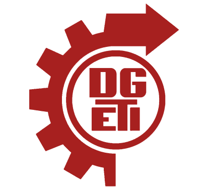

Los objetivos del CBTis 101 se alinean con la misión de los Centros de Bachillerato Tecnológico Industrial y de Servicios (CBTis) en México. Su propósito es brindar una educación de calidad con un enfoque técnico y tecnológico, preparando a los estudiantes para el mundo laboral o para continuar con estudios superiores.
Objetivos principales
- Formación académica y técnica: Combinar conocimientos teóricos con habilidades prácticas en diversas áreas industriales y de servicios.
- Preparación para el mercado laboral: Capacitar a los estudiantes con competencias que les permitan incorporarse a la industria, el comercio o los servicios.
- Desarrollo de habilidades tecnológicas: Fomentar el uso de herramientas digitales y tecnológicas para mejorar la competitividad de los egresados.
- Impulso al emprendimiento: Motivar a los estudiantes a desarrollar proyectos innovadores y fomentar su creatividad.
- Continuidad educativa: Facilitar la transición hacia estudios superiores en universidades o institutos tecnológicos.